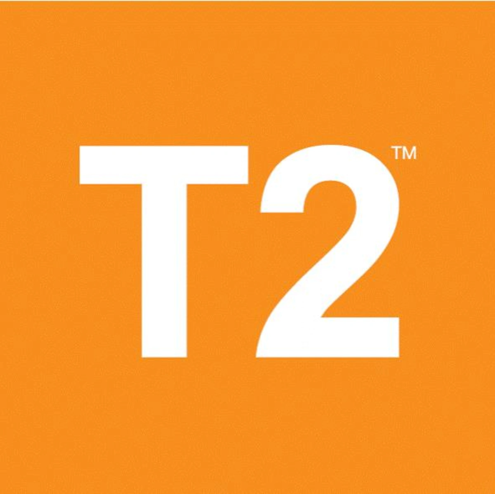
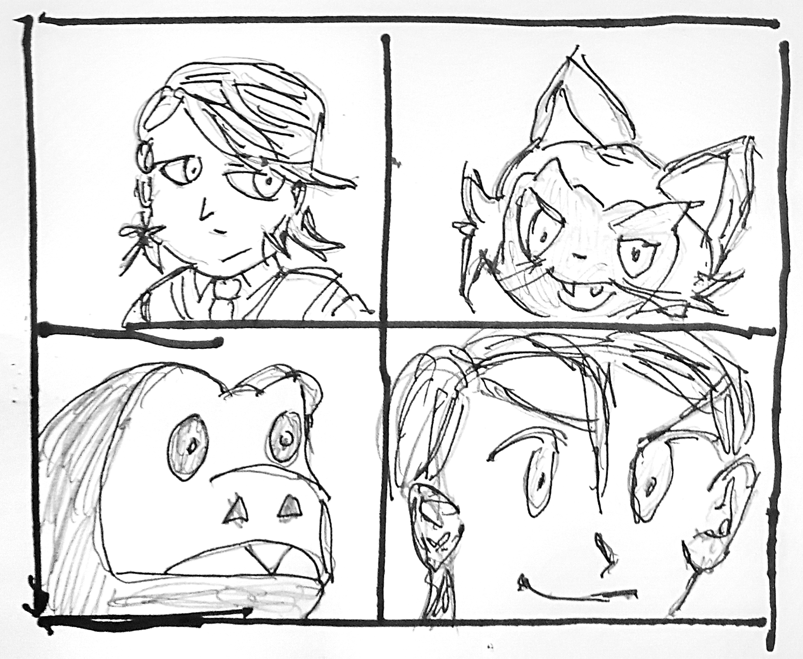

Print setup
Ctrl/Cmd + P · Paper size A4 · Margins: None · Scale: 100%
Issue 11 — generated via the bubble-tea-news-editor skill. First appearance of
Doki Doki Mon, a new syndicated four-panel monster-collecting parody strip,
taking this issue's cartoon-slot turn. Menace Watch (menace-watch-editorial) returns
for its third appearance, right on schedule per the tracker — Gordon Slate last ran Issue 7,
and this is roughly Issue 7 plus four; its target cross-references this issue's own breaking
bulletin. The Boba Side is next in line for the cartoon slot from Issue 12. Advertiser mix
spread for expo weekend: the Overload NZ ad now runs its own supplied flyer art (also backfilled
into Issues 9-10, replacing the text-only version) instead of just a text listing, and Lewis
Hamilton's usual page-2 ad-box slot went to T2, a real advertiser buying space this issue
— a plausible ad-buying bump for the one issue landing on the expo date itself. Lewis
Hamilton is held back to Issue 12 as a result.
Auckland · Weekly Edition
BUBBLE TEA NEWS
Issue 11 · 25 September 2026 · Complimentary — please take one
bubbletea.nz · est. 2026
Breaking · Bellevue Lane
Hand-Laminated Con Badges Spotted Two Days Early, Risk Assessed Low
Case definition: any full costume, laminated badge included, worn around town ahead of this weekend's Overload NZ convention. Six sightings as of Wednesday on the Bellevue Lane bus route alone, up from zero last week. The route's regulars have not yet agreed on whether queue-jumping in costume counts as "getting into character."
Community Outbreak Bulletin
Business · Markets
Sat On My Hands Through The Whole Rally, On Purpose
Sherman McCoy
Everyone else chased the open. I waited for the pullback that never came, watched the number climb without me, closed flat, moccasins up on the desk the whole time like a man with nothing to prove, which is exactly what a man with everything to prove says. Called it discipline out loud and something else entirely in my head. Judy asked if I regretted it. I said no. I regret it. Marshall was the only one in the house who didn't ask.
Canon Vignette
A Shard Barely Worth The Walk
Luke Skywalker
The vein ran thinner than the scan promised, the way they always do out past the Rim. Spent the last of the day's charge on a shard barely worth the walk back, and pocketed it anyway. Some habits outlast the reasons for them. The buyer will ask where it's from. I've stopped answering that honestly.
Markets · The Pearl Index
Con-Weekend Correlation, Provisional And Almost Certainly Confounded
Early read against n=210: counters within four blocks of the convention centre are already running 9% above trend (±4.1% MOE), two full days before doors open. Whether that's pre-con hydration strategy or simple foot-traffic overlap, the data can't yet say. Full weekend numbers next issue. Declaring no conflict of interest here would be a lie; I have a badge too.
Priya Anand, The Pearl Index
Weather · Epic Forecast
A Four-Degree Overnight Drop, Framed As It Deserves
Dana Foley
That is not a cold snap. That is the sky itself withdrawing its blessing from anyone still queueing outside in costume foam armour past midnight. Four degrees, gone between 11pm and dawn, and not one of you dressed for it. I warned you. I always warn you.
Bubble Tea Trivia · Did You Know?
A Genuine Coastal Naming Split
In the US, what to call the drink splits roughly by coast: "bubble tea" dominates east of the Rockies while "boba" is the more common order on the West Coast, a real regional dialect divide food researchers have actually mapped.
In Every Issue
- A new logic puzzle
- Fresh local trivia
- A rotating cast of columnists
- Local ad space, weekly
- Menace Watch, monthly — the editor's turn
"That is not a cold snap. That is the sky itself withdrawing its blessing."
— Dana Foley, on dressing appropriately
Joke of the Week
What did one tapioca pearl say to the other at closing time? Let's stick together.

Overload NZ 2026
26–27 Sept · NZ International Convention Centre. Tickets: overload.co.nz — this weekend.
Parody placement, not a real Overload NZ ad.
BUBBLE TEA NEWS · A weekly complimentary read for Auckland bubble tea retailers · All content satire/character-voice per each contributor's house disclaimer.
Bubble Tea News
Editorial · Menace Watch
The Early Badge-Wearer: Hero Or Menace?
Six sightings this week alone of a figure in full convention regalia (badge laminated, cape pressed), two full days before Overload NZ's doors even open, spotted queue-jumping nothing in particular at the Bellevue Lane counter with what witnesses describe as "unsettling premeditation." A fan's enthusiasm, some will say. I say a costume worn before its convention is a costume worn for an audience that hasn't consented to the bit yet. This paper offers its usual bounty (a lifetime pearl-milk-tea card) for a clear photograph of the face under that visor. I would know it anywhere, incidentally, having stood behind it in that exact queue Tuesday, in my own considerably less committed civilian clothes. Unmask yourself before the actual weekend, if you have any decency left to spend.
Gordon Slate, Editor-in-Chief
Shopping · Seeker's Eye
The Real Badge Reel, Buried Under Forty Decoys
Winnie Zhao
Every con-goer searching "lanyard badge holder acrylic" this week is drowning in the same forty decoy listings: same stock photo, same countdown timer that resets on refresh. One listing, four pages deep, actually ships 3mm acrylic instead of flexible plastic pretending to be acrylic. I've watched enough Snitches vanish from queues to know the real one when it finally sits still.
Rural · Ridgeline Weekly
Higgins Takes The Autumn Docking Tally, Doyle Protests The Scales
Clem Whitlock
Final count: 203 to 198, Higgins by five. Doyle's asked for a re-weigh twice already. Scales haven't moved. Neither has Doyle.
Puzzle of the Week
This Week's Restock Ranking
Last week's smudged order log, resolved: taro immediately before brown sugar only fits two spots in the sequence, and ruling out jasmine going first leaves exactly one order standing — taro first, brown sugar second, jasmine third.
Three flavours restocked this week, ranked low to high in demand (original, mango, taro):
- Mango wasn't the lowest-demand of the three.
- Original ranked immediately below mango.
- Taro ranked higher than original.
Which flavour had the week's highest demand? Answer next week — Ken Endo

T2
t2tea.com
Parody placement, not a real T2 ad.
In Memoriam
The Cash Tip Jar, Retired For A QR Code
Skeletor
Bellevue Lane's counter has, this week, retired its handwritten "Tips Appreciated!" jar for a laminated QR code taped to the till. I confess nothing about the jar's contents going conveniently uncounted for years. I confess nothing about where several of those coins are now. Mourn the jar if you liked its honesty system. Its replacement, I am reliably informed, asks for considerably more.
Ask the Captain
Nervous About This Weekend In Bellevue Lane
Horatio McCallister
"My partner and I are going to a convention together for the first time and I'm worried we'll want totally different things out of it." Nervous, two ships don't need the same heading to sail the same water. They need an agreed harbour to meet back at come evening. Pick your meeting spot now, before the crowds swallow the signal. Fair winds.
Doki Doki Mon · Debut

Doki Doki Mon — a new syndicated four-panel strip, Bubble Tea News's cartoon slot, hand-drawn; an original monster-collecting parody, unrelated to bubble tea by design
Next week: Issue 12 excludes only this week's roster — Sherman McCoy, Luke Skywalker, Priya Anand, Dana Foley, Winnie Zhao and Clem Whitlock — reopening Sebastian, M. Voss, Garfield, Wren, the Te Mana Whakaatu classifieds format, Robin Leach, Baxter Kline and The Stickybeak from Issue 10, plus Lewis Hamilton (held back from his usual ad-box slot this issue so a local advertiser could have it for expo weekend), Daffy Duck and Alan Grant, still waiting since Issue 4. Kate Rodgers and Freya Wilcox remain standing roster members. Menace Watch is off again until roughly Issue 15. The Boba Side returns to the cartoon slot next issue, its first appearance since Issue 8.